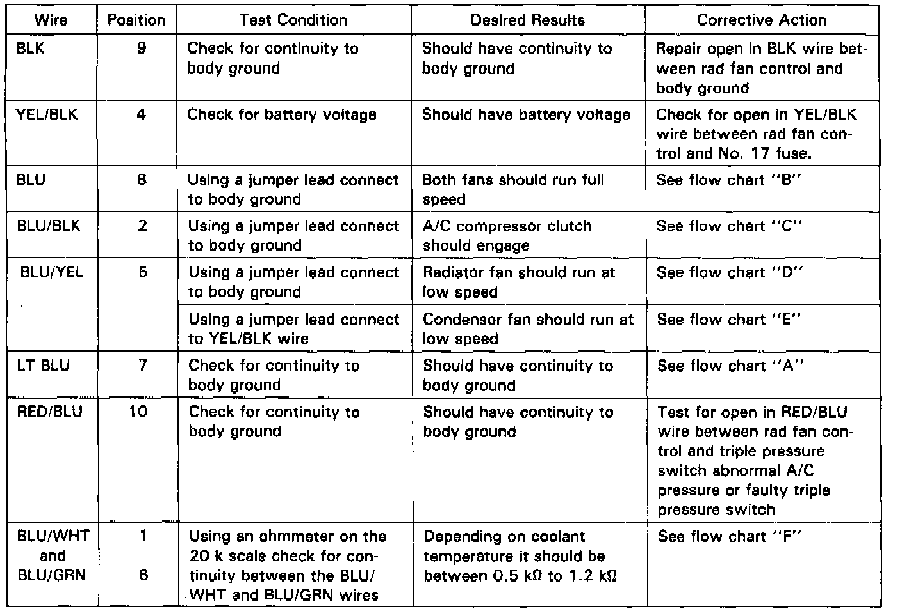
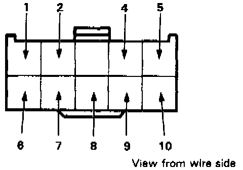

Fan Control Unit
RADIATOR FAN CONTROL UNIT INPUT TESTNOTE: Before performing input test, do the following:
1. Check fuse No. 24 (40A), 26 (40A), 35 (15A), 39 (2OA) and No. 40 (20A) in the Under Hood Relay Box and fuse No. 9 (1OA) and 17 (1OA) in the Under Dash Fuse Box.
2. Disconnect 1OP connector from Radiator Fan Control Unit and turn ignition switch ON.
NOTE:
- Any abnormality found during input test must be corrected before continuing.
- If all tests produce desired result substitute a known good radiator fan control unit.

